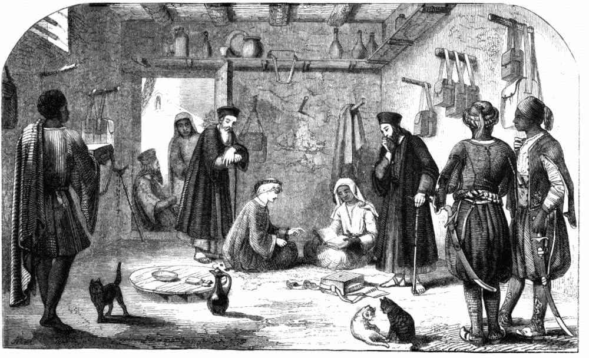

INTERIOR OF THE ABYSSINIAN LIBRARY, IN THE MONASTERY OF
SOURIANI ON THE NATRON LAKES.

| Abyssinian monk clothed in leather. | The dining table. | The blind abbot leaning over the Author. | Abyssinian monk. | Coptic monk. | The books hanging from wooden pegs let into the wall. | The Author's Egyptian servants. |